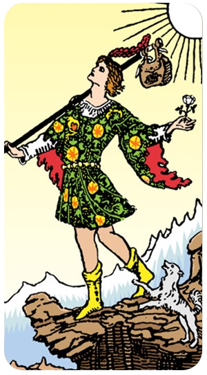
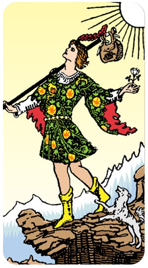
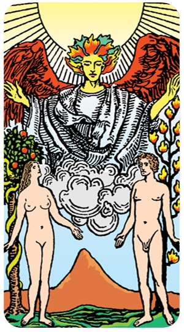
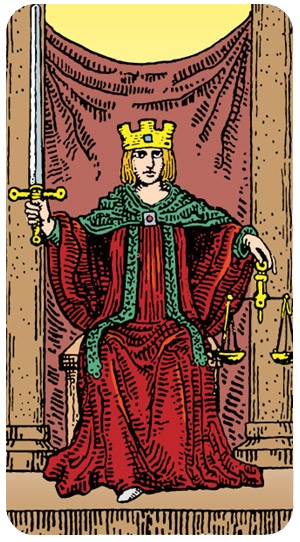
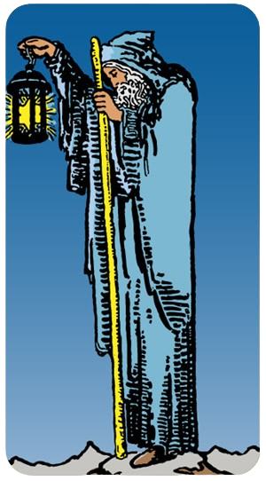
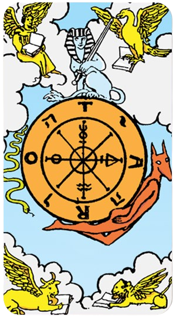
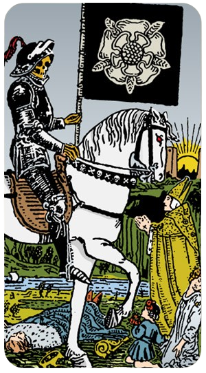

O Louco
Uma pessoa cujo Arcano Pessoal é 0 é representada pela carta "O Louco" no Tarot. O Louco é um símbolo de novos começos, aventura e liberdade. Aqui estão algumas características e desafios de alguém com o Arcano Pessoal 0:
Ele pode ser utilizado para compreender padrões financeiros, melhorar a vida material e emocional, e harmonizar a vida.
O Louco
Uma pessoa cujo Arcano Pessoal é 0 é representada pela carta "O Louco" no Tarot. O Louco é um símbolo de novos começos, aventura e liberdade. Aqui estão algumas características e desafios de alguém com o Arcano Pessoal 0:
Espontaneidade e Aventura: O Louco é conhecido por sua natureza aventureira e disposição para explorar o desconhecido. Essas pessoas geralmente têm um espírito livre e estão abertas a novas experiências, mesmo que isso signifique correr riscos.
Otimismo e Positividade: Elas tendem a ser otimistas e acreditam no melhor das pessoas e das situações. Esse traço pode levá-las a confiar mais em sua intuição do que em uma lógica rígida.
Independência e Liberdade: Valorizam a liberdade e a independência, muitas vezes preferindo traçar seu próprio caminho em vez de seguir as convenções estabelecidas.
Criatividade e Inovação: A mentalidade aberta e a disposição para experimentar novas ideias fazem delas pessoas criativas e inovadoras. Elas não têm medo de pensar fora da caixa.
Despreocupação e Alegria: Podem ser vistas como despreocupadas ou até mesmo inocentes, abraçando a vida com um senso de alegria e maravilha infantil.
Impulsividade: A mesma disposição para correr riscos pode levá-las a ser impulsivas, o que às vezes pode resultar em decisões precipitadas.
Falta de Foco: A constante busca por novas experiências pode dificultar a concentração em um objetivo ou projeto específico.
Naïveté: A confiança nas pessoas e situações pode deixá-las vulneráveis a decepções ou enganos.
Alguém com o Arcano Pessoal 0 pode ser visto como uma força da natureza, sempre movendo-se para frente e explorando novos horizontes. Pense em figuras históricas ou contemporâneas conhecidas por suas explorações ousadas ou por mudar paradigmas, como Cristóvão Colombo em suas viagens ao Novo Mundo ou inovadores modernos que desafiam o status quo.
O Louco nos lembra que, às vezes, o primeiro passo em uma nova jornada é simplesmente confiar no processo e no próprio caminho, mesmo quando ele não é totalmente claro.
O Mago

Uma pessoa cujo Arcano Pessoal é 1 é representada pela carta "O Mago" no Tarot. Esta carta é símbolo de potencial, habilidades e a capacidade de manifestar intenções e desejos. Aqui estão algumas características e desafios de alguém com o Arcano Pessoal 1:
Autoconfiança e Habilidade: O Mago é conhecido por sua autoconfiança e habilidade em manipular recursos à sua disposição. Essas pessoas geralmente têm uma forte crença em suas capacidades e habilidades.
Criatividade e Inovação: São criativas e capazes de trazer novas ideias à vida. Elas têm um talento especial para encontrar soluções inovadoras para problemas.
Iniciativa e Ação: O Mago é o mestre do início. Pessoas com este arcano são proativas e não hesitam em tomar a iniciativa. Elas são impulsionadas pela ação e raramente ficam paradas.
Comunicação Eficaz: Elas são comunicadoras eficazes, capazes de expressar suas ideias de forma clara e persuasiva. Têm a habilidade de convencer os outros de suas visões.
Foco e Concentração: Capazes de focar intensamente em seus objetivos e de canalizar suas energias de maneira produtiva. Elas sabem como manter o controle e a disciplina para alcançar o que desejam.
Arrogância: A autoconfiança pode, às vezes, se transformar em arrogância. Essas pessoas precisam estar atentas para não subestimar os outros ou se tornarem excessivamente autossuficientes.
Manipulação: Com grandes habilidades de comunicação e persuasão, há um risco de usar essas habilidades de maneira manipuladora.
Falta de Paciência: A necessidade constante de ação e progresso pode levar à impaciência. Essas pessoas podem se frustrar facilmente com atrasos ou obstáculos.
Uma pessoa com o Arcano Pessoal 1 pode ser vista como um líder nato, alguém que não apenas inicia projetos, mas também inspira e guia os outros. Pense em figuras históricas ou contemporâneas conhecidas por sua capacidade de transformar visões em realidade, como Steve Jobs, que trouxe inovação para o mundo da tecnologia com a Apple, ou Leonardo da Vinci, cuja criatividade e habilidade técnica deixaram um legado duradouro em diversas áreas.
O Mago nos lembra que temos os recursos e habilidades necessários para criar a nossa própria realidade. Ele nos encoraja a usar nosso potencial de maneira consciente e ética.
A Sacerdotisa/ A Papisa

Uma pessoa cujo Arcano Pessoal é 2 é representada pela carta "A Papisa" (ou "A Sacerdotisa") no Tarot. Esta carta simboliza conhecimento interior, intuição e sabedoria espiritual. Vamos explorar as características e os desafios de alguém com o Arcano Pessoal 2:
Intuição e Sabedoria Interior: A Papisa é conhecida por sua forte conexão com o conhecimento interior. Pessoas com este arcano confiam profundamente em sua intuição e são capazes de perceber verdades ocultas que outros podem não ver.
Pacificação e Serenidade: Essas pessoas geralmente possuem uma presença calmante e serena. Elas são pacificadoras naturais e tendem a buscar harmonia em suas relações e ambientes.
Discrição e Mistério: A Papisa é associada à discrição e ao mistério. Pessoas com este arcano podem ser reservadas, preferindo manter suas emoções e pensamentos mais profundos para si mesmas.
Busca de Conhecimento: Elas têm um desejo intenso de aprender e buscar conhecimento, especialmente em áreas espirituais, filosóficas ou psicológicas. São estudiosas e reflexivas.
Empatia e Compreensão: Têm uma grande capacidade de empatia e compreensão dos outros. Podem oferecer conselhos sábios e apoio emocional de maneira compassiva.
Tendência ao Isolamento: A natureza introspectiva e reservada pode levar ao isolamento. Essas pessoas podem precisar fazer um esforço consciente para se conectar socialmente.
Excesso de Passividade: A busca pela paz e harmonia pode fazer com que evitem confrontos necessários. É importante encontrar um equilíbrio entre serenidade e assertividade.
Secretividade Excessiva: A tendência a guardar segredos e a ser misteriosa pode dificultar a abertura e a transparência nas relações.
Uma pessoa com o Arcano Pessoal 2 pode ser vista como um guia espiritual ou conselheiro sábio. Pense em figuras históricas ou contemporâneas conhecidas por sua profundidade de compreensão e sabedoria, como Carl Jung, cujas teorias psicológicas foram profundamente influenciadas por aspectos espirituais e filosóficos, ou figuras espirituais como Dalai Lama, que oferecem sabedoria e compaixão ao mundo.
A Papisa nos lembra da importância de ouvir nossa voz interior e confiar em nossa intuição. Ela nos ensina a buscar conhecimento e sabedoria, tanto em nós mesmos quanto no mundo ao nosso redor.
A Imperatriz

Uma pessoa cujo Arcano Pessoal é 3 é representada pela carta "A Imperatriz" no Tarot. Esta carta simboliza criatividade, fertilidade, abundância e a energia materna. Vamos explorar as características e os desafios de alguém com o Arcano Pessoal 3:
Criatividade e Expressão: A Imperatriz é profundamente conectada à criatividade. Pessoas com este arcano tendem a ser extremamente criativas, seja nas artes, nos projetos pessoais, ou na resolução de problemas.
Nutriente e Cuidadora: Essas pessoas frequentemente assumem um papel de nutridoras, seja em suas famílias, comunidades ou locais de trabalho. Elas possuem uma energia maternal que as torna excelentes em oferecer suporte e carinho.
Abundância e Prosperidade: A Imperatriz é símbolo de abundância. Quem tem este arcano pode ter uma vida cheia de riqueza em várias formas – seja emocional, espiritual ou material.
Sensualidade e Prazer: Elas têm uma conexão forte com os prazeres sensoriais e físicos da vida. São sensuais e apreciam a beleza e a alegria nos detalhes do cotidiano.
Empatia e Compreensão: São altamente empáticas e compreensivas, o que as torna excelentes em lidar com as emoções e necessidades dos outros.
Superproteção: A inclinação para cuidar dos outros pode, às vezes, resultar em superproteção, tornando difícil para as pessoas ao redor desenvolverem sua independência.
Falta de Limites: A natureza generosa e empática pode levar a dificuldades em estabelecer limites, levando ao esgotamento emocional.
Excesso de Indulgência: Apreciar os prazeres da vida é importante, mas há um risco de se entregar excessivamente a esses prazeres, negligenciando outros aspectos importantes da vida.
Uma pessoa com o Arcano Pessoal 3 pode ser vista como uma figura inspiradora que equilibra a criação e o cuidado. Pense em figuras históricas ou contemporâneas conhecidas por sua habilidade de nutrir e criar, como Frida Kahlo, cuja arte e vida pessoal refletem profunda criatividade e força, ou Michelle Obama, que é admirada por sua empatia, inteligência e dedicação ao bem-estar da comunidade.
A Imperatriz nos lembra da importância de nutrir não apenas os outros, mas também a nós mesmos, e de encontrar beleza e alegria em nossas criações e em nossa vida cotidiana. Ela nos encoraja a abraçar nossa criatividade e a criar um ambiente de abundância e amor ao nosso redor.
O Imperador

Uma pessoa cujo Arcano Pessoal é 4 é representada pela carta "O Imperador" no Tarot. Esta carta simboliza autoridade, estabilidade, disciplina e estrutura. Vamos explorar as características e os desafios de alguém com o Arcano Pessoal 4:
Autoridade e Liderança: O Imperador é uma figura de autoridade e liderança. Pessoas com este arcano tendem a ser líderes naturais, capazes de comandar com firmeza e justiça.
Estabilidade e Segurança: Elas valorizam a estabilidade e trabalham diligentemente para construir uma base segura em suas vidas. Esse valor se reflete em seu trabalho, relacionamentos e vida pessoal.
Disciplina e Organização: Essas pessoas são extremamente disciplinadas e organizadas. Elas seguem regras e procedimentos com rigor, garantindo que tudo esteja em ordem.
Responsabilidade e Confiabilidade: O Imperador é confiável e responsável. Aqueles com este arcano são vistos como pilares de força em suas comunidades e famílias, sempre prontos para assumir responsabilidades.
Praticidade e Realismo: Elas abordam a vida de maneira prática e realista, focando em resultados concretos e tangíveis. Evitam devaneios e preferem manter os pés no chão.
Rigidez e Inflexibilidade: A busca pela ordem e disciplina pode levar à rigidez. Essas pessoas podem encontrar dificuldade em se adaptar a mudanças e novas ideias.
Dominância Excessiva: A natureza autoritária pode, às vezes, se transformar em comportamento dominador, onde elas tendem a impor suas vontades sobre os outros.
Desconexão Emocional: A ênfase na lógica e na praticidade pode levar a uma desconexão emocional, dificultando a expressão de sentimentos e a empatia.
Uma pessoa com o Arcano Pessoal 4 pode ser vista como um líder sólido e confiável. Pense em figuras históricas ou contemporâneas conhecidas por sua habilidade de construir e manter estruturas estáveis, como Nelson Mandela, que liderou com uma força serena e focou na construção de uma nação unida, ou Angela Merkel, cuja liderança estável e prática guiou a Alemanha por muitos anos.
O Imperador nos lembra da importância de construir uma base sólida e segura na vida. Ele nos ensina a valorizar a disciplina, a responsabilidade e a liderança justa.
O Papa / O Hierofante

Uma pessoa cujo Arcano Pessoal é 5 é representada pela carta "O Papa" (ou "O Hierofante") no Tarot. Esta carta simboliza sabedoria espiritual, ensino, autoridade moral e a busca por entendimento. Vamos explorar as características e os desafios de alguém com o Arcano Pessoal 5:
Sabedoria e Conhecimento: O Papa é frequentemente associado à sabedoria e ao conhecimento profundo. Pessoas com este arcano têm uma forte conexão com o aprendizado e a busca por verdades maiores.
Espiritualidade e Tradição: Elas tendem a ter uma forte ligação com a espiritualidade e podem encontrar conforto nas tradições e rituais. São atraídas por questões espirituais e filosóficas.
Ensino e Orientação: Essas pessoas são naturalmente inclinadas a ensinar e orientar os outros. Elas são excelentes mentores e conselheiros, sempre prontos para compartilhar seu conhecimento e ajudar no desenvolvimento dos outros.
Autoridade Moral: O Papa também representa a autoridade moral e ética. Aqueles com este arcano são vistos como figuras de integridade e retidão, frequentemente assumindo papéis de liderança moral em suas comunidades.
Busca por Harmonia: Elas buscam harmonia e ordem, tanto em suas vidas pessoais quanto nas vidas das pessoas ao seu redor. Valorizam a estabilidade e a coesão social.
Dogmatismo: A forte ligação com tradições e crenças pode levar a um comportamento dogmático, onde essas pessoas podem resistir a novas ideias ou mudanças.
Excesso de Rigidez: A busca por ordem e estabilidade pode resultar em uma atitude rígida e inflexível, dificultando a adaptação a novas circunstâncias.
Pressão de Expectativas: Ser visto como uma figura de autoridade moral pode trazer uma pressão constante para viver de acordo com expectativas elevadas, o que pode ser desgastante.
Uma pessoa com o Arcano Pessoal 5 pode ser vista como um mentor sábio e guia espiritual. Pense em figuras históricas ou contemporâneas conhecidas por sua sabedoria e orientação, como Mahatma Gandhi, que liderou com princípios morais e espirituais, ou Martin Luther King Jr., cujos ensinamentos e liderança promoveram grandes mudanças sociais e éticas.
O Papa nos lembra da importância de buscar conhecimento e verdade, e de compartilhar essa sabedoria com os outros. Ele nos encoraja a abraçar nossos papéis como mentores e guias, ajudando a iluminar o caminho para aqueles ao nosso redor.
Os Enamorados / Os Amantes
Uma pessoa cujo Arcano Pessoal é 6 é representada pela carta "Os Amantes" no Tarot. Esta carta simboliza amor, união, escolhas e harmonia. Vamos explorar as características e os desafios de alguém com o Arcano Pessoal 6:
Amor e Relacionamentos: Os Amantes estão profundamente conectados com questões de amor e relacionamentos. Pessoas com este arcano tendem a valorizar muito suas relações afetivas e a buscar conexões profundas e significativas.
Escolhas e Decisões: Este arcano está associado a escolhas importantes e decisões de vida. Pessoas com o Arcano 6 são frequentemente confrontadas com decisões que moldam significativamente suas vidas e precisam seguir o que lhes parece ser certo.
Harmonia e Equilíbrio: Elas buscam harmonia e equilíbrio em suas vidas, não apenas em seus relacionamentos, mas também em suas atividades diárias e ambiente. A paz e a coesão são fundamentais para elas.
Atração e Beleza: Têm um forte apreço pela beleza e pela estética, podendo ser atraídas pelas artes e por expressões criativas que celebrem o amor e a união.
Empatia e Compreensão: São empáticas e compreensivas, com uma habilidade natural para entender e compartilhar os sentimentos dos outros, o que as torna ótimas em nutrir relacionamentos saudáveis e harmoniosos.
Indecisão: A natureza de tomar decisões importantes pode levar à indecisão, especialmente quando há várias opções igualmente atraentes.
Dependência Emocional: A forte ênfase em relacionamentos pode levar a uma dependência emocional excessiva, onde a identidade pessoal se torna entrelaçada com a de seus parceiros ou entes queridos.
Idealismo: A busca por harmonia e beleza pode levar ao idealismo, onde a pessoa pode ter expectativas irrealistas sobre si mesma, os outros ou a vida em geral.
Uma pessoa com o Arcano Pessoal 6 pode ser vista como alguém que valoriza profundamente o amor e a harmonia. Pense em figuras históricas ou contemporâneas conhecidas por suas contribuições para relações interpessoais e beleza, como John Lennon, que pregava o amor e a paz através de sua música e ativismo, ou Frida Kahlo, cujas obras de arte intensamente pessoais e expressivas refletem a profundidade de suas emoções e relacionamentos.
Os Amantes nos lembram da importância de escolher com o coração e de buscar harmonia e equilíbrio em todas as áreas da vida. Eles nos encorajam a valorizar nossos relacionamentos e a tomar decisões que estejam em alinhamento com nossos verdadeiros sentimentos e valores.
O Carro

Uma pessoa cujo Arcano Pessoal é 7 é representada pela carta "O Carro" no Tarot. Esta carta simboliza determinação, controle, movimento e vitória. Vamos explorar as características e os desafios de alguém com o Arcano Pessoal 7:
Determinação e Foco: O Carro é conhecido por sua determinação e foco. Pessoas com este arcano têm uma forte vontade de alcançar seus objetivos e não são facilmente desviadas de seu caminho.
Autocontrole e Disciplina: Elas têm um alto grau de autocontrole e disciplina, o que lhes permite superar obstáculos e desafios com eficiência.
Movimento e Progresso: Estas pessoas estão sempre em movimento, buscando progresso em suas vidas. Elas são dinâmicas e não gostam de ficar paradas ou estagnadas.
Confiança e Coragem: O Carro é um símbolo de confiança e coragem. Elas são corajosas e não hesitam em enfrentar novos desafios com confiança em suas habilidades.
Vitória e Conquista: São frequentemente bem-sucedidas em suas empreitadas devido à combinação de determinação, foco e coragem. A vitória e a conquista são temas recorrentes em suas vidas.
Impulsividade: A natureza dinâmica e o desejo de progresso podem levar à impulsividade. Elas podem tomar decisões rápidas sem considerar todas as consequências.
Teimosia: A forte determinação pode se transformar em teimosia, tornando difícil aceitar opiniões diferentes ou mudar de direção quando necessário.
Exaustão: O constante movimento e busca por conquistas podem levar ao esgotamento físico e mental se elas não tomarem cuidado para equilibrar descanso e esforço.
Uma pessoa com o Arcano Pessoal 7 pode ser vista como um líder arrojado e motivado. Pense em figuras históricas ou contemporâneas conhecidas por sua capacidade de avançar continuamente e superar desafios, como Alexander the Great, que conquistou grande parte do mundo conhecido com sua determinação e estratégia, ou Serena Williams, cuja carreira no tênis é marcada por uma dedicação implacável e inúmeras vitórias.
O Carro nos lembra da importância de manter o controle sobre nossa vida e seguir em direção aos nossos objetivos com confiança e determinação. Ele nos encoraja a não desistir diante dos desafios e a continuar avançando, sempre com os olhos na vitória.
A Justiça
Uma pessoa cujo Arcano Pessoal é 8 é representada pela carta "A Justiça" no Tarot. Esta carta simboliza equilíbrio, verdade, responsabilidade e justiça. Vamos explorar as características e os desafios de alguém com o Arcano Pessoal 8:
Equilíbrio e Harmonia: A Justiça é profundamente conectada com a ideia de equilíbrio. Pessoas com este arcano tendem a buscar harmonia em todas as áreas de suas vidas, procurando sempre manter as coisas justas e equitativas.
Senso de Justiça: Elas possuem um forte senso de justiça e ética. Valorizam a verdade e são defensores da moralidade e da integridade, lutando pelo que é certo.
Responsabilidade e Honestidade: São extremamente responsáveis e honestas. Assumem a responsabilidade por suas ações e esperam que os outros façam o mesmo.
Tomada de Decisão Justa: Têm uma habilidade natural para tomar decisões justas e equilibradas. Avaliam cuidadosamente todos os lados de uma questão antes de tomar uma decisão.
Analítica e Racional: Abordam as situações de maneira analítica e racional. Preferem basear suas ações em fatos e lógica, em vez de emoções.
Rigidez: A busca pela justiça e equilíbrio pode levar à rigidez. Essas pessoas podem achar difícil lidar com situações onde a justiça e a moralidade não são claras ou onde compromissos são necessários.
Crítica Excessiva: Podem ser excessivamente críticas consigo mesmas e com os outros, sempre buscando a perfeição e a retidão.
Desapego Emocional: A ênfase na racionalidade e na análise pode resultar em um certo desapego emocional, dificultando a conexão emocional com os outros.
Uma pessoa com o Arcano Pessoal 8 pode ser vista como uma figura de autoridade que valoriza a justiça e a integridade acima de tudo. Pense em figuras históricas ou contemporâneas conhecidas por sua busca pela justiça, como Nelson Mandela, que lutou pela igualdade e justiça racial na África do Sul, ou Ruth Bader Ginsburg, cuja carreira foi marcada pela defesa dos direitos humanos e igualdade de gênero.
A Justiça nos lembra da importância de viver de acordo com nossos valores e princípios morais. Ela nos ensina a buscar equilíbrio e justiça em nossas vidas e a tomar decisões que refletem nossos valores mais profundos.
O Eremita
Uma pessoa cujo Arcano Pessoal é 9 é representada pela carta "O Eremita" no Tarot. Esta carta simboliza introspecção, sabedoria, isolamento voluntário e a busca por verdade interior. Vamos explorar as características e os desafios de alguém com o Arcano Pessoal 9:
Introspecção e Reflexão: O Eremita é associado à introspecção profunda e à reflexão. Pessoas com este arcano tendem a buscar respostas dentro de si mesmas e valorizam o tempo a sós para pensar e meditar.
Sabedoria e Conhecimento Interior: Elas possuem uma sabedoria interior significativa e frequentemente atuam como conselheiras ou mentoras, guiando os outros com seus insights profundos.
Isolamento Voluntário: Muitas vezes, preferem a solidão ou pequenos grupos em vez de grandes multidões. O tempo a sós é crucial para o seu bem-estar e crescimento pessoal.
Busca por Verdade e Propósito: Estão constantemente em busca de uma verdade mais profunda e de um propósito significativo na vida. Esta busca pode levá-las a explorar filosofias, espiritualidades e práticas de autoconsciência.
Paciência e Calma: Têm uma presença calmante e paciente, ajudando a trazer tranquilidade e clareza em situações de estresse ou confusão.
Isolamento Excessivo: A tendência a buscar a solidão pode levar ao isolamento excessivo, dificultando a formação de conexões significativas com os outros.
Desapego Emocional: Podem lutar para compartilhar seus sentimentos e pensamentos mais profundos, o que pode causar barreiras em relacionamentos íntimos.
Introspecção Exagerada: A busca constante por respostas interiores pode, às vezes, resultar em excesso de autoanálise e paralisação devido a indecisões ou dúvidas.
Uma pessoa com o Arcano Pessoal 9 pode ser vista como um buscador de sabedoria e um guia espiritual. Pense em figuras históricas ou contemporâneas conhecidas por sua profundidade de pensamento e busca interior, como o filósofo Sócrates, que passou a vida em busca de sabedoria e compreensão, ou o monge budista Thich Nhat Hanh, cuja vida e ensinamentos são um testemunho da importância da meditação, introspecção e paz interior.
O Eremita nos lembra da importância de olhar para dentro de nós mesmos para encontrar respostas e de valorizar o tempo a sós para reflexão e crescimento pessoal. Ele nos ensina a importância da sabedoria interior e da paciência na jornada da vida.
A Roda da Fortuna
Uma pessoa cujo Arcano Pessoal é 10 é representada pela carta "A Roda da Fortuna" no Tarot. Esta carta simboliza mudança, ciclos de vida, destino e a natureza cíclica do universo. Vamos explorar as características e os desafios de alguém com o Arcano Pessoal 10:
Adaptabilidade e Flexibilidade: Pessoas com o Arcano 10 tendem a ser extremamente adaptáveis e flexíveis. Elas compreendem que a vida está cheia de altos e baixos e são capazes de se ajustar às mudanças de maneira eficaz.
Resiliência: A Roda da Fortuna simboliza a natureza cíclica da vida, o que confere a essas pessoas uma notável resiliência. Elas conseguem se levantar após adversidades, entendendo que momentos difíceis são temporários.
Otimismo e Esperança: Têm um olhar otimista sobre a vida, acreditando no fluxo positivo das coisas. Elas entendem que a sorte pode mudar rapidamente e mantêm uma atitude de esperança mesmo em tempos difíceis.
Aceitação do Destino: Pessoas com este arcano são mais propensas a aceitar o destino e a acreditar que há um propósito maior nos eventos da vida. Elas confiam no processo da vida e estão dispostas a seguir o fluxo.
Curiosidade e Desejo de Exploração: A Roda da Fortuna é também um símbolo de novas oportunidades e descobertas. Essas pessoas são curiosas e desejam explorar diferentes aspectos da vida, aproveitando novas experiências e aprendizados.
Incerteza: A natureza cíclica e imprevisível da vida pode causar sentimentos de incerteza. Essas pessoas precisam aprender a lidar com a ansiedade que vem com a falta de controle absoluto sobre os acontecimentos.
Dependência da Sorte: Podem se tornar excessivamente dependentes da sorte e das circunstâncias externas, em vez de agir proativamente para moldar seu próprio destino.
Dificuldade com Rotina: A constante busca por mudanças e novas experiências pode tornar difícil para elas se comprometerem com rotinas ou compromissos a longo prazo.
Uma pessoa com o Arcano Pessoal 10 pode ser vista como alguém que aceita e navega pelas mudanças da vida com graça e coragem. Pense em figuras históricas ou contemporâneas conhecidas por sua capacidade de enfrentar altos e baixos e continuar avançando, como Oprah Winfrey, que superou inúmeras adversidades e transformou sua vida através de resiliência e adaptabilidade, ou Richard Branson, cujas inúmeras empreitadas empresariais são exemplos de como abraçar o desconhecido pode levar ao sucesso.
A Roda da Fortuna nos lembra da importância de aceitar os ciclos da vida e de confiar no fluxo dos acontecimentos. Ela nos ensina a ser resilientes e a manter a esperança, sabendo que a mudança é uma parte constante da vida.
A Força

Uma pessoa cujo Arcano Pessoal é 11 é representada pela carta "A Força" no Tarot. Esta carta simboliza coragem, compaixão, determinação e equilíbrio entre força física e mental. Vamos explorar as características e os desafios de alguém com o Arcano Pessoal 11:
Coragem e Bravura: A Força é um símbolo de coragem. Pessoas com este arcano tendem a enfrentar desafios e adversidades com uma coragem notável, sem recuar diante de obstáculos.
Compaixão e Gentileza: Elas combinam sua força interior com uma profunda compaixão e gentileza. Sabem quando ser firmes e quando ser suaves, exibindo um equilíbrio harmonioso entre os dois.
Determinação e Perseverança: São determinadas e perseverantes, capazes de manter seu curso mesmo nas situações mais difíceis. Esta qualidade permite que alcancem seus objetivos através da persistência.
Autocontrole e Disciplina: Têm um alto grau de autocontrole e disciplina. Conseguem gerenciar suas emoções e instintos de maneira equilibrada, usando sua força de maneira construtiva.
Equilíbrio entre Força Física e Mental: A Força simboliza não apenas a força física, mas também a força mental e emocional. Essas pessoas são resilientes tanto fisicamente quanto psicologicamente.
Exigência Excessiva de Si Mesmas: A determinação e a disciplina podem levar a expectativas muito altas de si mesmas, resultando em pressão e estresse.
Dificuldade em Pedir Ajuda: Podem ter dificuldade em pedir ajuda, preferindo enfrentar os desafios sozinhas devido à sua natureza corajosa e independente.
Controle Excessivo: A necessidade de autocontrole pode, às vezes, se transformar em uma tentativa de controlar demais as situações e pessoas ao redor.
Uma pessoa com o Arcano Pessoal 11 pode ser vista como uma figura de força e inspiração. Pense em figuras históricas ou contemporâneas conhecidas por sua coragem e determinação, como Malala Yousafzai, que mostrou uma incrível força e coragem ao defender a educação das meninas apesar das ameaças que enfrentou, ou Nelson Mandela, cuja perseverança e compaixão foram fundamentais na luta contra o apartheid na África do Sul.
A Força nos lembra da importância de equilibrar nossa força interior com compaixão e gentileza. Ela nos ensina a enfrentar desafios com coragem e a usar nossa força de maneira positiva e construtiva.
O Enforcado / O Pendurado

Uma pessoa cujo Arcano Pessoal é 12 é representada pela carta "O Enforcado" no Tarot. Esta carta simboliza sacrifício, perspectiva, entrega e transformação. Vamos explorar as características e os desafios de alguém com o Arcano Pessoal 12:
Perspectiva e Clareza: Pessoas com este arcano tendem a ver o mundo de uma maneira única e diferente. Elas são capazes de observar as situações de vários ângulos, oferecendo novas perspectivas e insights.
Aceitação e Entrega: Elas aceitam as circunstâncias da vida com serenidade e compreensão. Em vez de lutar contra as adversidades, preferem abraçar a situação e encontrar paz nela.
Transformação Interior: A vida dessas pessoas é marcada por profundas transformações interiores. Elas frequentemente passam por processos significativos de crescimento pessoal e espiritual.
Sacrifício e Altruísmo: O Enforcado simboliza o sacrifício. Essas pessoas estão dispostas a fazer sacrifícios pelo bem maior, seja na vida pessoal ou na comunidade. Elas colocam o bem-estar dos outros acima de suas próprias necessidades.
Paciência e Calma: Elas possuem uma grande capacidade de paciência e calma, enfrentando os desafios com tranquilidade e aceitação.
Estagnação: A aceitação e a entrega podem levar à estagnação. Essas pessoas podem se sentir presas em situações e ter dificuldade em tomar ações decisivas para mudar suas circunstâncias.
Autossacrifício Excessivo: A disposição para fazer sacrifícios pode se transformar em autossacrifício excessivo, onde negligenciam suas próprias necessidades e bem-estar.
Isolamento: A busca por transformação interior pode levar ao isolamento social, afastando-se dos outros enquanto procuram respostas e clareza.
Uma pessoa com o Arcano Pessoal 12 pode ser vista como alguém que oferece uma visão profunda e alternativa do mundo, buscando sempre crescimento e entendimento. Pense em figuras históricas ou contemporâneas que passaram por grandes transformações e usaram suas experiências para iluminar o caminho dos outros, como Nelson Mandela, que sacrificou grande parte de sua vida pela liberdade de seu povo, ou Malala Yousafzai, que enfrentou adversidades extremas e usou suas experiências para advogar pela educação de meninas em todo o mundo.
O Enforcado nos lembra da importância de ver as coisas de diferentes perspectivas e de aceitar as mudanças e sacrifícios como parte do crescimento e transformação. Ele nos ensina a abraçar a jornada interior com paciência e serenidade.
A Morte
Uma pessoa cujo Arcano Pessoal é 13 é representada pela carta "A Morte" no Tarot. Esta carta simboliza transformação, fim de ciclos, renovação e novas oportunidades. Apesar do nome assustador, a carta da Morte é profundamente positiva quando se trata de crescimento e mudança. Vamos explorar as características e os desafios de alguém com o Arcano Pessoal 13:
Transformação e Renascimento: é símbolo de transformação profunda. Pessoas com este arcano frequentemente passam por períodos significativos de renovação e mudança em suas vidas, renascendo de experiências antigas com nova energia e perspectivas.
Aceitação das Mudanças:m uma habilidade notável para aceitar e se adaptar às mudanças. Entendem que o fim de um ciclo é apenas o início de outro, e abraçam essas transições com coragem.
Liberação do Passado:essoas são boas em deixar o passado para trás e seguir em frente. São capazes de desapegar de coisas, situações ou pessoas que não servem mais ao seu crescimento.
Resiliência e Coragem:ram uma resiliência impressionante frente aos desafios e adversidades. Enfrentam as dificuldades com uma coragem serena, sabendo que cada desafio é uma oportunidade para se transformar.
Profundidade e Introspecção: natureza profunda e introspectiva. São reflexivas e buscam constantemente entender o significado mais profundo de suas experiências e da vida em geral.
Desconforto com a Estabilidade: A constante busca por transformação pode torná-las desconfortáveis com a estabilidade e a rotina. Elas podem sentir a necessidade de mudanças constantes para se sentirem realizadas.
Medo do Desconhecido: Embora aceitem as mudanças, o medo do desconhecido pode ser um desafio. Precisam aprender a confiar no processo de transformação sem saber exatamente o que está por vir.
Processos Dolorosos: As transformações profundas muitas vezes envolvem processos dolorosos de perda e desapego, o que pode ser emocionalmente desafiador.
Uma pessoa com o Arcano Pessoal 13 pode ser vista como um agente de mudança e renovação. Pense em figuras históricas ou contemporâneas que passaram por transformações significativas e usaram essas experiências para evoluir e inspirar os outros. Por exemplo, Nelson Mandela, que transformou seu próprio sofrimento e encarceramento em uma força de mudança para seu país, ou Malala Yousafzai, que, após sobreviver a um ataque, se reinventou como uma ativista global pela educação das meninas.
A Morte nos lembra que o fim de um ciclo é uma oportunidade para um novo começo. Ela nos ensina a aceitar e abraçar a mudança como parte natural da vida, permitindo-nos evoluir e crescer com cada experiência.
A Temperança

Uma pessoa cujo Arcano Pessoal é 14 é representada pela carta "A Temperança" no Tarot. Esta carta simboliza equilíbrio, moderação, harmonia e integração. Vamos explorar as características e os desafios de alguém com o Arcano Pessoal 14:
Equilíbrio e Moderação: Pessoas com este arcano valorizam o equilíbrio em todas as áreas da vida. Elas praticam moderação e evitam os extremos, buscando sempre a harmonia.
Paciência e Calma: São conhecidas por sua paciência e calma. Em situações estressantes, mantêm a serenidade e ajudam os outros a encontrar equilíbrio.
Integração e Unidade: Têm a habilidade de integrar diferentes aspectos de suas vidas e personalidades em uma unidade coesa. Elas harmonizam conflitos internos e externos.
Curadoras e Mediadoras: Frequentemente assumem papéis de curadoras e mediadoras, ajudando a resolver conflitos e promovendo a paz e a harmonia entre as pessoas.
Busca pelo Significado: Estão constantemente em busca de significado e propósito. Elas acreditam na importância de encontrar um propósito maior e de viver em alinhamento com ele.
Comprometimento Excessivo: A busca incessante pelo equilíbrio pode levar a um excesso de compromissos, dificultando a tomada de decisões firmes quando necessário.
Evitar Confrontos: Podem evitar confrontos a qualquer custo, mesmo quando é necessário enfrentar um problema de frente.
Pressão para Manter a Harmonia: O desejo de manter a harmonia pode causar estresse, especialmente se sentirem que é sua responsabilidade resolver todos os conflitos ao seu redor.
Uma pessoa com o Arcano Pessoal 14 pode ser vista como um pacificador e um exemplo de equilíbrio e harmonia. Pense em figuras históricas ou contemporâneas conhecidas por sua capacidade de promover a paz e a integração, como Dalai Lama, cujo ensinamento e vida são um testemunho de paz, equilíbrio e moderação, ou Mahatma Gandhi, que usou a não-violência como uma poderosa ferramenta para resolver conflitos e trazer mudança.
A Temperança nos lembra da importância de encontrar equilíbrio e harmonia em nossas vidas. Ela nos ensina a praticar a moderação e a buscar a integração de diferentes aspectos de nós mesmos e do mundo ao nosso redor.
O Diabo

Uma pessoa cujo Arcano Pessoal é 15 é representada pela carta "O Diabo" no Tarot. Esta carta simboliza desejo, materialismo, ilusões e as sombras interiores. Vamos explorar as características e os desafios de alguém com o Arcano Pessoal 15:
Paixão e Intenso Desejo: Pessoas com este arcano tendem a experimentar paixões e desejos intensos. Elas são movidas por suas ambições e têm uma forte conexão com suas vontades e necessidades.
Charme e Magnetismo: Elas possuem um charme e magnetismo natural que atrai os outros. Sua presença é poderosa e pode ser muito cativante.
Forte Conexão com o Mundo Material: Valorizam o mundo material e tudo o que ele tem a oferecer, incluindo riqueza, prazer e conforto. Têm um bom entendimento de como conseguir o que desejam.
Autoconsciência e Sombras Interiores: Essas pessoas têm uma profunda autoconsciência, incluindo o reconhecimento de suas sombras e aspectos mais sombrios de sua personalidade. Estão dispostas a confrontar e trabalhar com esses aspectos.
Independência e Liberdade: Valorizam sua independência e liberdade pessoal. Elas resistem a qualquer forma de controle externo que possa limitar sua expressão e desejos.
Materialismo Excessivo: A forte conexão com o mundo material pode levar ao materialismo excessivo, onde as posses e os prazeres físicos se tornam prioritários em detrimento de outros aspectos da vida.
Manipulação e Controle: O charme e o magnetismo podem ser usados de maneira manipuladora para controlar os outros, o que pode levar a relacionamentos tóxicos.
Confronto com Sombras: Confrontar e integrar as sombras interiores é um processo desafiador que requer coragem e honestidade. Ignorar essas sombras pode levar a comportamentos autodestrutivos.
Uma pessoa com o Arcano Pessoal 15 pode ser vista como alguém que enfrenta suas próprias sombras e desejos com coragem e se esforça para encontrar um equilíbrio saudável entre seus impulsos e suas responsabilidades. Pense em figuras históricas ou contemporâneas que lidam com as complexidades do desejo humano e do materialismo, como Elon Musk, que, apesar de suas ambições e conquistas materiais, enfrenta desafios pessoais e públicos relacionados ao seu comportamento e imagem, ou Salvador Dalí, cujo trabalho artístico explorava os desejos e as sombras interiores de maneira fascinante e provocativa.
O Diabo nos lembra da importância de reconhecer e trabalhar com nossas sombras e desejos, sem deixar que eles nos controlem. Ele nos ensina a encontrar equilíbrio e a usar nossa força interior para enfrentar e transformar aspectos desafiadores de nossa personalidade.
A Torre

Uma pessoa cujo Arcano Pessoal é 16 é representada pela carta "A Torre" no Tarot. Esta carta simboliza mudança abrupta, revelação, transformação e libertação. Vamos explorar as características e os desafios de alguém com o Arcano Pessoal 16:
Transformação Radical: Pessoas com este arcano frequentemente experimentam mudanças abruptas e radicais em suas vidas. Estas transformações, embora desafiadoras, levam a um crescimento significativo e a uma renovação.
Revelação e Clareza: A Torre é símbolo de revelação. Estas pessoas têm a capacidade de ver além das ilusões e revelam verdades ocultas. Elas trazem clareza e verdade, mesmo que isso signifique destruir estruturas antigas.
Resiliência e Adaptabilidade: Devido às mudanças drásticas que enfrentam, desenvolvem uma resiliência impressionante e a habilidade de se adaptar rapidamente a novas circunstâncias.
Libertação e Redefinição: Elas frequentemente passam por processos de libertação, onde se livram de velhas crenças, hábitos ou situações que não lhes servem mais, redefinindo-se no processo.
Desafiar o Status Quo: São inclinadas a desafiar o status quo e questionar as normas estabelecidas. Elas buscam a verdade e não hesitam em derrubar sistemas que consideram injustos ou falsos.
Instabilidade: As mudanças abruptas podem trazer instabilidade e insegurança. Essas pessoas precisam aprender a encontrar equilíbrio em meio ao caos.
Trauma e Estresse: As revelações e transformações intensas podem ser emocionalmente desgastantes, levando a traumas ou estresse se não forem geridas corretamente.
Resistência ao Desapego: A necessidade de desapegar de velhas estruturas pode ser dolorosa. Elas podem lutar contra a mudança, mesmo sabendo que é necessária para o crescimento.
Uma pessoa com o Arcano Pessoal 16 pode ser vista como um catalisador de mudança e verdade. Pense em figuras históricas ou contemporâneas que passaram por transformações significativas e usaram essas experiências para inspirar os outros. Por exemplo, Nelson Mandela, que enfrentou a destruição de seu próprio mundo durante o apartheid para emergir como um líder transformador, ou Malala Yousafzai, cuja vida mudou abruptamente após um ataque, mas que se levantou para desafiar a opressão e lutar pela educação das meninas.
A Torre nos lembra da importância de aceitar as mudanças e transformações como parte essencial do crescimento. Ela nos ensina a abraçar a verdade, mesmo quando ela é dolorosa, e a permitir que novas estruturas mais saudáveis e autênticas tomem seu lugar.
A Estrela

Uma pessoa cujo Arcano Pessoal é 17 é representada pela carta "A Estrela" no Tarot. Esta carta simboliza esperança, inspiração, espiritualidade e renovação. Vamos explorar as características e os desafios de alguém com o Arcano Pessoal 17:
Esperança e Otimismo: Pessoas com este arcano irradiam esperança e otimismo. Elas acreditam em um futuro brilhante e mantêm uma atitude positiva mesmo em tempos difíceis.
Inspiração e Criatividade: A Estrela é uma fonte de inspiração. Estas pessoas são criativas e têm a capacidade de inspirar os outros com suas ideias e visão.
Conexão Espiritual: Elas têm uma forte conexão com a espiritualidade e buscam constantemente um entendimento mais profundo da vida e do universo. Sentem-se alinhadas com um propósito maior.
Renovação e Cura: A Estrela simboliza a renovação. Essas pessoas são vistas como curadoras, tanto para si mesmas quanto para os outros. Elas trazem um senso de paz e renovação para aqueles ao seu redor.
Generosidade e Altruísmo: São generosas e altruístas, sempre dispostas a ajudar os outros e compartilhar suas bênçãos. Elas se preocupam profundamente com o bem-estar dos outros e trabalham para fazer do mundo um lugar melhor.
Idealismo Excessivo: A natureza otimista e esperançosa pode levar ao idealismo excessivo, onde expectativas irrealistas podem resultar em decepções.
Necessidade de Apoio: A busca por inspiração constante pode fazer com que dependam do apoio e validação de outros para manter sua própria esperança.
Esquecer-se de Si: Em sua generosidade, podem esquecer de cuidar de si mesmas, levando ao esgotamento emocional e físico.
Uma pessoa com o Arcano Pessoal 17 pode ser vista como uma fonte de luz e esperança. Pense em figuras históricas ou contemporâneas conhecidas por sua capacidade de inspirar e trazer renovação, como Jane Goodall, cuja paixão e trabalho com os chimpanzés trouxeram uma nova compreensão e esperança para a conservação da vida selvagem, ou Dalai Lama, cuja sabedoria e espiritualidade continuam a inspirar milhões de pessoas ao redor do mundo.
A Estrela nos lembra da importância de manter a esperança e de buscar a renovação em nossas vidas. Ela nos ensina a encontrar inspiração nas situações mais difíceis e a usar nossa luz interior para iluminar o caminho para os outros.
A Lua

Uma pessoa cujo Arcano Pessoal é 18 é representada pela carta "A Lua" no Tarot. Esta carta simboliza intuição, mistério, ilusões e o inconsciente. Vamos explorar as características e os desafios de alguém com o Arcano Pessoal 18:
Intuição e Sensibilidade: Pessoas com este arcano têm uma forte intuição e são altamente sensíveis. Elas confiam em seus instintos e sentimentos profundos para guiar suas decisões.
Mundo Onírico e Criatividade: Elas possuem uma conexão rica com o mundo dos sonhos e da imaginação. Sua criatividade é impulsionada por essa ligação com o inconsciente, levando-as a expressar-se artisticamente de maneira única.
Mistério e Profundidade: Têm uma aura de mistério ao seu redor. Elas são profundas e muitas vezes mantêm seus pensamentos e sentimentos mais íntimos escondidos.
Exploração do Inconsciente: São atraídas pelo estudo do inconsciente e dos aspectos ocultos da psique. Podem se interessar por psicologia, espiritualidade e práticas esotéricas.
Empatia e Compreensão Emocional: Têm uma grande capacidade de empatia e compreensão das emoções alheias, o que as torna ótimas conselheiras e amigas.
Ilusões e Desilusões: A forte conexão com o mundo dos sonhos e das emoções pode levar a ilusões e desilusões. Elas precisam distinguir entre a intuição verdadeira e os enganos do inconsciente.
Medo e Ansiedade: A exploração do inconsciente pode trazer à tona medos e ansiedades ocultas. Enfrentar essas emoções pode ser um desafio contínuo.
Dificuldade com a Realidade: Podem ter dificuldades em lidar com a realidade prática e objetiva, preferindo refugiar-se em seu mundo interior.
Uma pessoa com o Arcano Pessoal 18 pode ser vista como uma figura enigmática e profundamente intuitiva. Pense em figuras históricas ou contemporâneas conhecidas por sua ligação com o mistério e o inconsciente, como Carl Jung, cujas teorias exploraram os aspectos profundos e ocultos da psique humana, ou Sylvia Plath, cuja poesia capturou de forma vívida os mundos interiores de emoções e sonhos.
A Lua nos lembra da importância de ouvir nossa intuição e explorar os mistérios do inconsciente. Ela nos ensina a abraçar nossa sensibilidade e a usar nossa criatividade para navegar pelo mundo interior e exterior.
O Sol

Uma pessoa cujo Arcano Pessoal é 19 é representada pela carta "O Sol" no Tarot. Esta carta simboliza alegria, sucesso, clareza e vitalidade. Vamos explorar as características e os desafios de alguém com o Arcano Pessoal 19:
Alegria e Positividade: Pessoas com este arcano irradiam alegria e positivismo. Elas têm uma visão otimista da vida e espalham felicidade onde quer que vão.
Sucesso e Realização: O Sol é um símbolo de sucesso. Estas pessoas tendem a alcançar altos níveis de realização em suas empreitadas, graças à sua energia positiva e determinação.
Clareza e Verdade: Elas possuem uma clareza mental que lhes permite ver as coisas como realmente são. A busca pela verdade e pela transparência é uma característica marcante.
Vitalidade e Energia: Estas pessoas têm uma energia vital forte. Elas são ativas, dinâmicas e frequentemente envolvidas em atividades que exigem vigor físico e mental.
Carisma e Popularidade: Têm um carisma natural que atrai os outros. Sua presença é calorosa e acolhedora, tornando-as populares em seus círculos sociais.
Excesso de Otimismo: O otimismo pode, às vezes, se transformar em negligência dos possíveis riscos ou desafios. Elas precisam equilibrar sua positividade com um toque de realismo.
Pressão para Manter a Felicidade: A expectativa de sempre serem a fonte de alegria pode ser desgastante. É importante que permitam a si mesmas sentir e expressar uma gama completa de emoções.
Superexposição: O desejo de estar constantemente em destaque pode levar ao esgotamento. Precisam aprender a valorizar momentos de introspecção e descanso.
Uma pessoa com o Arcano Pessoal 19 pode ser vista como um raio de sol que ilumina a vida dos outros. Pense em figuras históricas ou contemporâneas conhecidas por sua alegria e sucesso, como Oprah Winfrey, cuja carreira e filantropia têm trazido inspiração e alegria a milhões de pessoas, ou Pelé, cuja energia e carisma no campo de futebol fizeram dele um ícone mundial e uma fonte de alegria para incontáveis fãs.
O Sol nos lembra da importância de manter uma perspectiva positiva e de buscar a verdade e a clareza em nossas vidas. Ele nos ensina a celebrar nossas realizações e a compartilhar nossa felicidade com os outros.
O Julgamento

Uma pessoa cujo Arcano Pessoal é 20 é representada pela carta "O Julgamento" no Tarot. Esta carta simboliza renovação, despertar, avaliação e mudança significativa. Vamos explorar as características e os desafios de alguém com o Arcano Pessoal 20:
Despertar e Renovação: Pessoas com este arcano frequentemente passam por momentos de grande despertar e renovação. Elas têm a habilidade de reinventar-se e renascer de suas próprias cinzas.
Autoavaliação e Reflexão: Elas têm uma forte inclinação para a autoavaliação e reflexão profunda. Regularmente revisam suas vidas, escolhas e ações, buscando sempre melhorar e evoluir.
Mudança e Transformação: O Julgamento é um símbolo de transformação significativa. Essas pessoas não têm medo de mudanças radicais e frequentemente abraçam novos começos com entusiasmo.
Chamado Interior: Sentem um chamado interior para cumprir um propósito maior ou missão de vida. Estão sintonizadas com seu destino e trabalham ativamente para alinhar suas ações com esse chamado.
Tomada de Decisões Justas: Possuem um forte senso de justiça e ética. São capazes de tomar decisões importantes baseadas em uma avaliação justa e equilibrada dos fatos e circunstâncias.
Autocrítica Excessiva: A tendência à autoavaliação pode levar a uma autocrítica excessiva, onde se julgam duramente por erros passados ou imperfeições.
Medo do Julgamento: Podem ser sensíveis ao julgamento dos outros e ter medo de ser mal compreendidas ou criticadas.
Resistência à Estagnação: A constante busca por renovação e transformação pode fazer com que se sintam inquietas ou insatisfeitas com a estabilidade e a rotina.
Uma pessoa com o Arcano Pessoal 20 pode ser vista como alguém que está em constante evolução e busca por propósito. Pense em figuras históricas ou contemporâneas conhecidas por seus momentos de despertar e transformação, como Nelson Mandela, que após anos de prisão se tornou um símbolo de renovação e justiça, ou Oprah Winfrey, cuja vida e carreira foram marcadas por reinvenções e um compromisso com um propósito maior.
O Julgamento nos lembra da importância de ouvir nosso chamado interior e de não ter medo de mudanças necessárias para nosso crescimento. Ele nos ensina a abraçar a renovação e a transformação, usando nossos insights para evoluir continuamente.
O Mundo

Uma pessoa cujo Arcano Pessoal é 21 é representada pela carta "O Mundo" no Tarot. Esta carta simboliza realização, completude, integração e sucesso. Vamos explorar as características e os desafios de alguém com o Arcano Pessoal 21:
Realização e Sucesso: Pessoas com este arcano tendem a alcançar um alto nível de realização em suas vidas. Elas completam seus projetos com sucesso e sentem uma profunda satisfação com suas conquistas.
Integração e Unidade: Estas pessoas têm a capacidade de integrar diferentes aspectos de suas vidas e de si mesmas em uma unidade coesa. Elas conseguem harmonizar suas experiências e habilidades de maneira equilibrada.
Viagens e Expansão: O Mundo também simboliza viagens e expansão. Essas pessoas têm um desejo de explorar o mundo, aprender com diferentes culturas e expandir seus horizontes.
Plenitude e Completude: Sentem um profundo senso de plenitude e completude. Elas estão em paz com quem são e com o caminho que escolheram seguir.
Conexão Global: Têm uma conexão forte com o mundo ao seu redor e se sentem parte de algo maior. Elas trabalham para causas globais e buscam contribuir para o bem-estar da humanidade.
Medo de Novos Inícios: Após alcançar a completude, podem sentir um medo de novos inícios ou de deixar para trás o que já foi realizado.
Pressão para Manter o Sucesso: O alto nível de realização pode criar uma pressão para manter o sucesso, o que pode ser desgastante.
Dificuldade em Encontrar Novos Objetivos: Após completar grandes objetivos, podem lutar para encontrar novos propósitos e se sentir desmotivadas.
Uma pessoa com o Arcano Pessoal 21 pode ser vista como uma figura de sucesso e completude. Pense em figuras históricas ou contemporâneas conhecidas por suas grandes realizações e influência global, como Nelson Mandela, cujo trabalho trouxe uma sensação de completude e realização para sua nação, ou Malala Yousafzai, que continua a expandir seu impacto global através de suas conquistas e defesa da educação.
O Mundo nos lembra da importância de celebrar nossas realizações e de buscar a integração e a completude em nossas vidas. Ele nos ensina a expandir nossos horizontes e a abraçar a conexão global, reconhecendo nosso papel no grande esquema da humanidade.